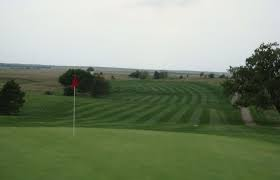

The Front Nine
The front nine is consists of the first original nine holes of "The Fort" before the back nine holes were added. Built around an old military outpost, golfers can enjoy a little bit of history as they play. The front nine presents many challenges to a golfer. Difficult slopes, a little bit of water, and nearby out-of-bounds areas on most holes are all things a player would have to look out for. Golfers can also stop at the pro-shop for a quick break before heading to the back nine.
